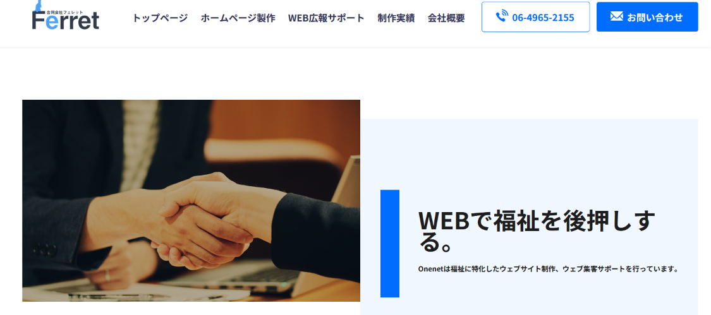
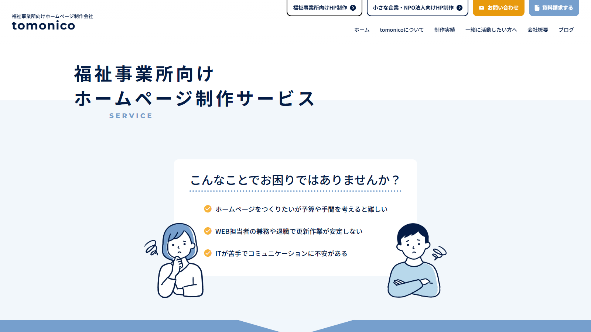
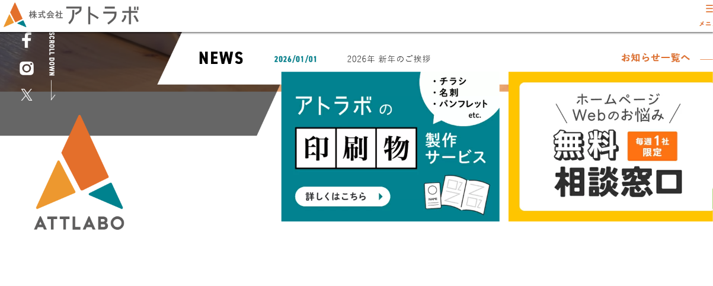

就労継続支援B型事業所のホームページ制作サービスは、費用だけでなく、福祉分野への理解、B型の制作実績、デザイン、公開後の更新・運用のしやすさにも違いがあります。
B型は、利用者やご家族が「実際にその事業所でどのように過ごすのか」をイメージできるかどうかが特に重要な福祉サービスです。作業内容や工賃、1日の流れなど、伝えるべき情報も他の福祉サービスと異なります。
まずは比較表と各社の特徴から、ご自身の事業所に合う選択肢をご確認ください。
目次

まずは4社の特徴を一覧で比較できます。詳しい説明は後半でご紹介します。
| 比較項目 | 福祉ITパートナー福祉特化・低価格型 | Onenet福祉特化・自社運用型 | tomonico障害福祉特化・継続支援型 | 株式会社アトラボ総合制作・デザイン重視型 |
|---|---|---|---|---|
| 料金目安 | 19,800円〜（例）／55,000円〜（標準） | 98,000円〜＋月額6,800円〜（税別） | 初期0円・月額8,900円〜（税別） | 297,000円〜（税込） |
| 福祉分野への理解 | ◎ | ◎ | ◎ | △ |
| B型の制作実績 | 制作サンプルあり | 実績あり（グループホーム等含む） | 実績あり（は〜と豊島） | 実績あり（サポートセンターBird） |
| デザイン | ○ | ○ | ○ | ◎ |
| 更新・運用 | ○ | ◎ | ◎ | △ |
| 相談のしやすさ | ◎ | ○ | ◎ | △ |
| 向いている事業所 | 福祉特化・低価格で、相談しながら進めたい事業所 | 福祉特化で自社更新や運用支援まで考えたい事業所 | 障害福祉への理解と継続的な更新サポートを重視する事業所 | オリジナルデザインや制作実績を重視する事業所 |
「料金目安」は各社公式サイト等で確認できる代表的なプランの例です。ページ数や内容により変動するため、詳細は各社公式サイトでご確認ください。

就労継続支援B型は、利用者やご家族が「実際にその事業所でどのように過ごすのか」をイメージできるかどうかが、他の福祉サービス以上に重要です。作業内容や工賃だけでなく、1日の流れや事業所の雰囲気が伝わることで、見学や利用開始への不安を減らすことができます。
どのような利用者を想定しているかが伝わるか
対象となる障害の特性や年齢層、支援の方向性が伝わると、利用を検討する方やご家族が自分に合うかを判断しやすくなります。
作業内容と工賃の目安が具体的に分かるか
「軽作業があります」だけでなく、具体的な作業内容や工賃の目安が示されていると、実際に働く姿をイメージしやすくなります。
1日の流れ・利用日、利用時間が明確か
通所から作業、休憩、終了までの流れや、利用可能な曜日・時間帯が分かると、生活リズムに合うかを確認しやすくなります。
送迎・昼食など、通いやすさに関わる情報があるか
送迎の有無や対応範囲、昼食の提供方法などは、通所を継続できるかどうかに関わる情報です。
見学・体験、利用開始までの流れが分かるか
見学や体験の申し込み方法、利用開始までの手続きが分かると、初めての方でも安心して問い合わせしやすくなります。
事業所の雰囲気や職員の支援内容が伝わるか
写真や文章で事業所の雰囲気や職員の支援内容が伝わると、利用者本人やご家族が安心感を持ちやすくなります。
問い合わせへの導線が分かりやすいか
電話・フォーム・LINEなど、問い合わせ方法がすぐに分かる構成になっているかも重要なポイントです。

福祉ITパートナー
 公式サイトを見る ↗
公式サイトを見る ↗
福祉・介護・看護・地域支援のホームページ制作に幅広く対応しており、就労継続支援B型にも対応しています。見学・体験・問い合わせにつながる導線を意識した制作を行っており、精神保健福祉士の資格を持つ担当者に相談しながら進められる点が特徴です。
B型向けの制作サンプルも公開されています。ページ数や内容により、料金は変動する場合があります。
メリット
- 福祉・介護・看護・地域支援など、幅広い福祉分野に対応
- 就労継続支援B型向けの制作サンプルがある
- 見学・体験・問い合わせにつながる導線を意識した制作
- 精神保健福祉士の資格を持つ担当者に相談できる
- スマートフォン対応
注意点
- 大規模サイトや高度な機能には向かない場合がある
- 料金や納期の詳細は問い合わせ・公式サイトでの確認が必要
- 対応可能なページ数や機能は制作サンプルの範囲が目安
こんな方におすすめ
福祉特化で費用を抑えつつ、相談しながら進めたい事業所
Onenet（合同会社フェレット）

公式サイトを見る ↗福祉に特化したホームページ制作・WEB集客支援を行っており、福祉業界出身の技術者が制作を担当しています。就労継続支援B型や、グループホーム「ひだまりグループ」など福祉分野での制作実績があります。
上記はB型で利用可能な5ページまでのプランの目安です（制作費98,000円＋月額6,800円×12か月で算出）。複数事業所向け10ページプランは148,000円〜（税別）＋月額9,800円〜（税別）です。
メリット
- 福祉業界出身の技術者が制作を担当
- 就労継続支援B型の制作実績がある
- 納品後は利用者自身での編集が可能
- サイト運用・更新・広告運用のサポートがある
- 独自ドメイン・Googleマップ表示に対応
注意点
- 月額費用が継続して発生する
- ページ数が増えると料金が上がる
- 詳細な機能や対応範囲は公式サイト・問い合わせでの確認が必要
こんな方におすすめ
福祉特化で、自社での更新や運用支援まで考えたい事業所
tomonico

公式サイトを見る ↗障害福祉事業所向けのホームページ制作に対応しており、代表者自身が障害福祉への理解を持っています。就労継続支援B型「は〜と豊島」の制作実績があり、公開後の文章変更や写真差し替えなど継続的な更新サポートを受けられる点が特徴です。
基本サイトは7ページ構成、料金は税別・3年契約が前提のプランです。このほか、ミドルプラン（初期189,000円・月額5,000円）、フリープラン（初期298,000円・月額保守更新費0円）もあります。詳細は公式サイトでご確認ください。
メリット
- 代表者が障害福祉への理解を持っている
- 就労継続支援B型の制作実績がある（は〜と豊島）
- 公開後の文章変更・写真差し替えなど継続的な更新サポートがある
- ブログ、Googleビジネスプロフィールの基本設定にも対応
注意点
- トモニコプランは3年契約が前提
- 月額料金が継続して発生する
- ページ数や機能を増やす場合は別プランの確認が必要
こんな方におすすめ
障害福祉への理解と、継続的な更新サポートを重視する事業所
株式会社アトラボ

公式サイトを見る ↗福祉専門の制作会社ではなく、幅広い業種のホームページ制作を手がける制作会社です。就労継続支援B型「サポートセンター Bird」の制作実績があり、1日の流れや業務内容、スマートフォン対応など安心感・親しみやすさを意識した制作が行われています。
上記はWordPressテンプレート利用・5ページ・WP基本設定込みの料金（税込）です。オリジナルデザインでの制作はさらに高い価格帯になり、公式の料金ページではライトプラン495,000円（税込）なども掲載されています。サーバーや保守費用など、継続費用は別途確認が必要です。
メリット
- 就労継続支援B型の制作実績がある（サポートセンター Bird）
- オリジナルデザインでの制作に対応
- WordPress、レスポンシブ対応、内部SEO、問い合わせフォーム、SNS連携に対応
- 多業種のホームページ制作実績がある
注意点
- 福祉専門の制作会社ではない
- テンプレート利用でも料金は他社より高めの傾向
- オリジナルデザインの場合はさらに高額になる
- 料金・納期の詳細は公式サイト・問い合わせでの確認が必要
こんな方におすすめ
オリジナルデザインや、制作会社としての実績を重視する事業所

就労継続支援B型のホームページには、以下のような情報を掲載しておくと、利用を検討する方やご家族に安心感を伝えやすくなります。
- 事業所の理念・特徴
- サービス内容（作業内容・活動内容）
- 工賃の目安
- 1日の流れ
- 利用日・利用時間
- 送迎の有無
- 昼食の提供方法
- 見学・体験の案内
- 利用開始までの流れ
- スタッフ紹介・支援内容
- アクセス・施設の写真
- 問い合わせフォーム・電話・LINEなどの導線
制作会社に依頼する際は、これらの情報をどこまで一緒に整理してもらえるか、公開後に自分たちで更新できるかもあわせて確認しておくと安心です。

1年目の総額で比較する
制作費だけでなく、月額料金、サーバー、ドメイン、公開作業、保守費用まで含めて確認する。
福祉・障害福祉への理解とB型の実績を確認する
制度や利用者への理解に加え、就労継続支援B型の制作実績があるかも確認する。
公開後の更新・運用体制を確認する
工賃や利用日など変更が発生しやすい情報を、自分たちで更新できるか、依頼できるかを確認する。
デザインと相談のしやすさを見る
利用者やご家族に安心感を与えるデザインか、要望を伝えながら進められるかも確認する。

就労継続支援B型のホームページ制作は、料金だけでなく、福祉分野への理解、B型の制作実績、公開後の更新・運用のしやすさまで含めて比較することが大切です。
福祉特化で費用を抑えたい場合は福祉ITパートナー、自社での更新や運用支援まで考えたい場合はOnenet、障害福祉への理解と継続的な更新サポートを重視する場合はtomonico、オリジナルデザインや制作会社としての実績を重視する場合はアトラボが候補になります。
まずは1年目の総額と、B型の制作実績、公開後の運用体制を確認し、自分たちの事業所に合った依頼先を選びましょう。
本記事の比較について
本記事は、各社の公式サイト等で公開されている情報をもとに、料金・特徴・サポート内容などを比較しています。
掲載内容は作成時点の情報です。料金やサービス内容は、各社の都合により変更される場合があります。
最新の料金や対応内容については、各社の公式サイトで直接ご確認ください。